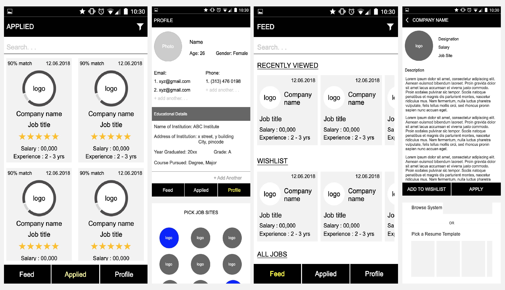
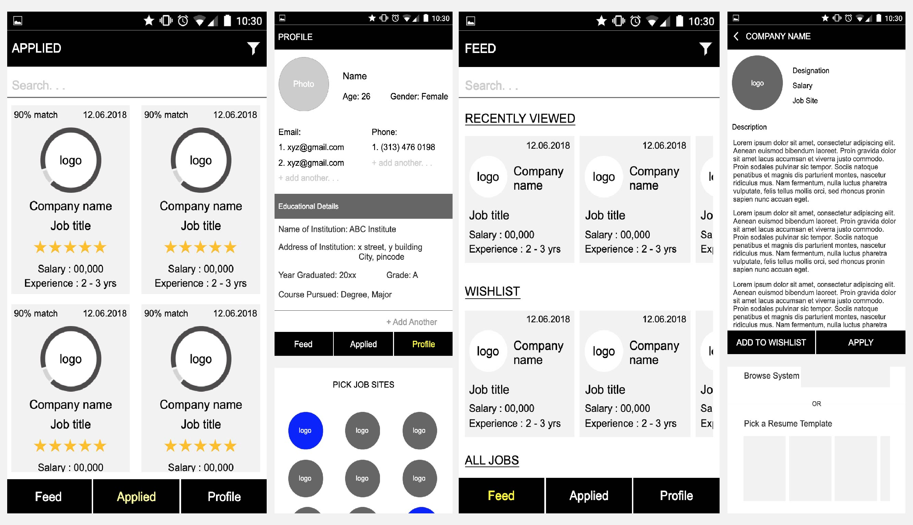
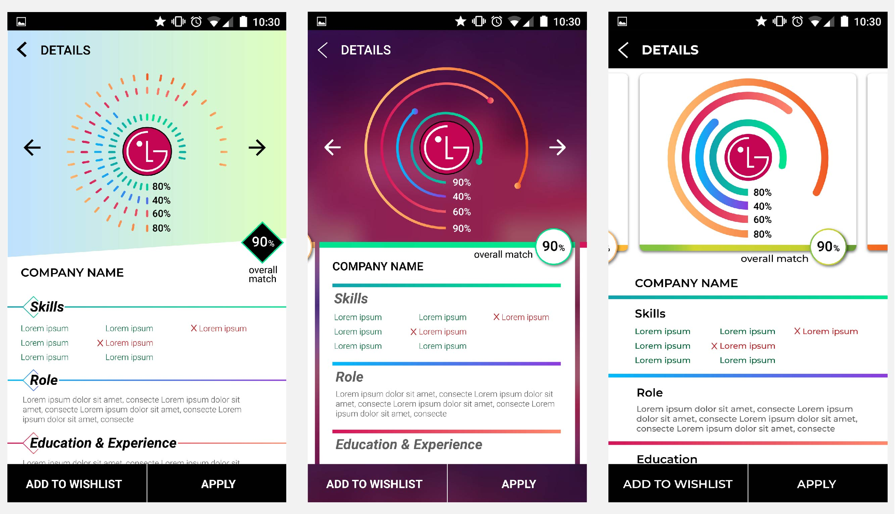
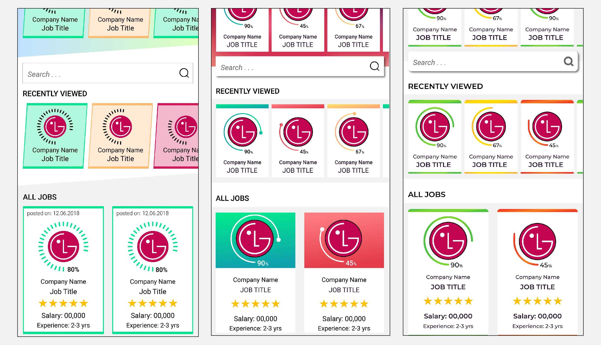
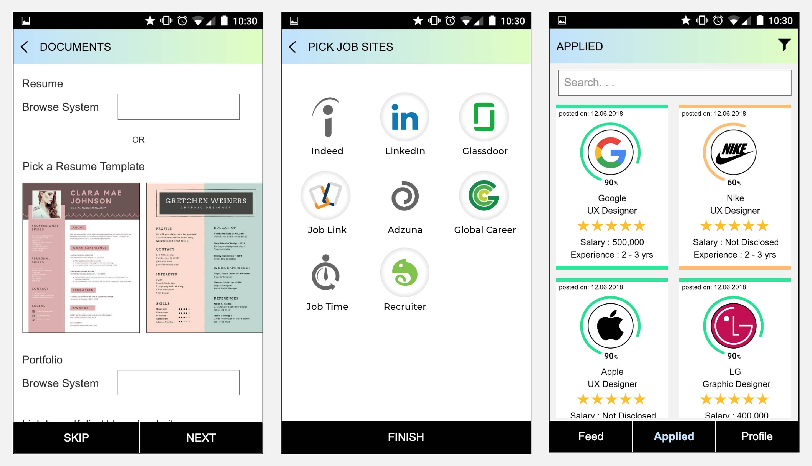
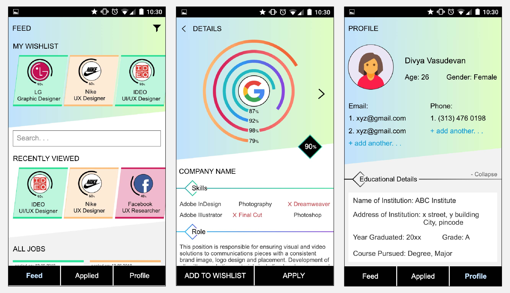

Online Job Search Made Easy
UI / UX Design, Solo Project
Looking for a job requires a heavy investment in time. Identifying the right
resources is just as important as preparing and applying for the job and is very time
consuming.
This project is an initiative to indentify the issues in the online job application process and
help make the experience easier.
Tools: Axure RP, Illustrator, Photoshop
Sketching and Wireframing
After ideation the final wireframes for the UI were created for the major screens of the app to flesh out the layout and content.
 

UI Explorations
Three UI styles were created to experiment and identify the right one to use. I decided to use the leftmost one with minor modifications as the colors and design were meant to be soothing which I believe would be valued by job searchers.
Though the first style was picked the final UI for the feed contains a mix of the best elements from the three explorations shown below.
Final UI
During signup all the details necessary for you to find a good job needs to be entered by the user. The app provides a set of resume templates that automatically fills up the resume based on the information enetered. This eases usage for those who find this step difficult. Based on the kind of jobs you are searching for the app also suggests sources that you can search in and provides a common login portal for them all. This avoids the time necessary to find these yourself.
The feed contains all the jobs from multiple sources in one place. Graphic cues and content show how close of a match a job is to what you consider your dream job. This makes it easy to quickly scroll through the content. The details page segregates content for easy reading and understanding. The graph on top can give you a quick idea about whether you want to bother reading further which will save a lot of time.
Future Improvements
The work done so far deals mainly with the initial stages. Integrating with Google calendar and mail to keep track of appointments and help job-seekers keep in touch with contacts by reminding them to keep track of and send out follow up mails is one important addition. Job seekers may also be looking for more than one kind of job. The user journey would have to be modified so that there are no conflicts or confusion created because of the different kinds of information that would then be present.
Prototype
Shown below is a video of the prototype that was created in axure to simulate all the major interactions.